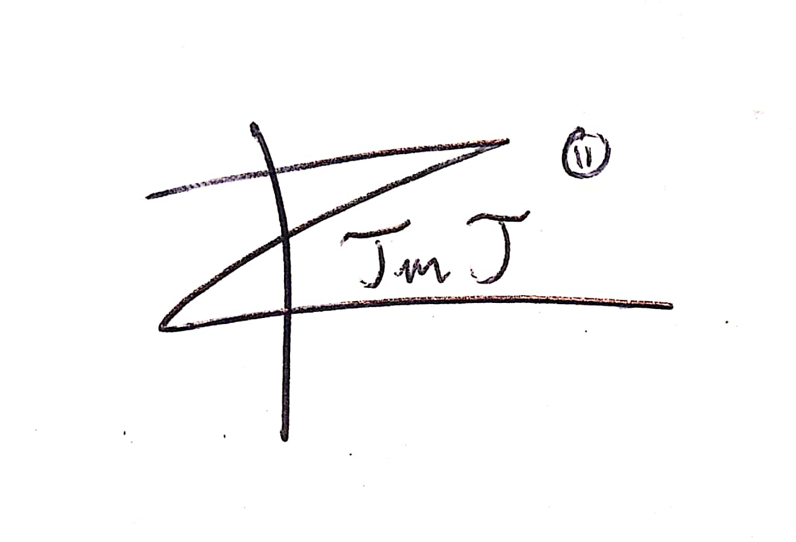
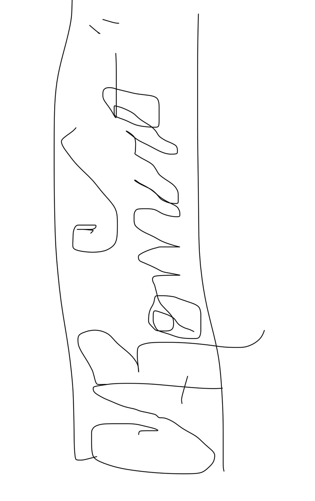
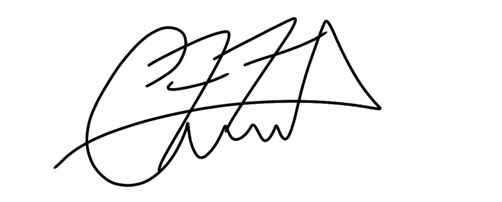

Actas de Recepción
Referencia: Proyecto Tecnológico innovador
Proyecto: Billetera digital de criptoActivos
Cliente: Mauricio Funes
Entrega de: Aplicación móvil
Fecha: 12 febrero / 11 de junio
Estado: Parcial
Elementos entregados – Aplicación móvil (ID #1.2)
| Elemento | Estado | Descripción |
|---|---|---|
| Desarrollo Frontend | Finalizado | Interfaz gráfica completa para dispositivos móviles, enfocada en una experiencia de usuario intuitiva y navegación fluida. |
| Integración con Plataforma Local | Finalizado | Conexión funcional entre el frontend de la app móvil y la plataforma local, permitiendo el flujo de datos mediante APIs. |
| Funcionalidades de Transacciones | En desarrollo | Módulo para realizar transacciones rápidas y seguras dentro de la aplicación. |
| Seguridad de la Aplicación | En desarrollo | Sistema de protección que incluye autenticación segura, cifrado de datos y documentación de medidas de seguridad implementadas. |
Pruebas
No se han realizado pruebas formales sobre los módulos entregados. Se recomienda encarecidamente llevar a cabo pruebas funcionales, de usabilidad y de integración para garantizar el correcto desempeño y la estabilidad de la aplicación móvil.
Recomendaciones
- Realizar pruebas exhaustivas en los módulos finalizados antes de su despliegue en producción.
- Documentar los resultados de las pruebas para futuras referencias y mejoras.
- Establecer un protocolo de validación continua durante el desarrollo de los módulos en curso.
- Asegurar que el módulo de seguridad sea sometido a pruebas de vulnerabilidad antes de su liberación.
Observaciones
- No se realizaron pruebas formales sobre los módulos entregados.
- Se recomienda ejecutar pruebas funcionales, de usabilidad e integración antes de su despliegue definitivo.
- La documentación de seguridad fue entregada, pero no validada mediante pruebas técnicas específicas.
| Por el cliente | Por el contratista |
|---|---|
|
Nombre: Mauricio Funes Firma: MF Fecha: 08/05/2025 |
Nombre: Ángel Guevara Firma: Fecha: 08/05/2025 |
Referencia: Proyecto Tecnológico Innovador
Proyecto: Implementación de billetera digital de criptoactivos para Flowi
Cliente: Salvador Sánchez Cerén
Entrega de: Plataforma Local
Fecha: 20/01/2025 - 23/04/2025
Estado: Final
Elementos entregados
- Base de datos
- Software
- Inteligencia Artificial
- Hardware
- Redes
Pruebas realizadas
No se especificaron pruebas realizadas sobre los entregables.
Acta de recepción
El Cliente certifica que la totalidad de los suministros o servicios reseñados en la presente acta de recepción han sido entregados terminados y que, habiendo sido sometidos a las pruebas de validación y aceptación indicadas, están de acuerdo con las especificaciones formales y demás requisitos contractualmente convenidos y establecidos entre las partes.
Observaciones
Se recomienda haber implementado pruebas sobre cada entregable para asegurar su calidad y funcionamiento.
| Por el cliente | Por el contratista |
|---|---|
|
Nombre: Salvador Sánchez Cerén Firma: SSC Fecha: 08/05/2025 |
Nombre: Jefferson Josué Esperanza Ortiz Firma:  Fecha: 08/05/2025 |
Referencia: Proyecto tecnológico innovador
Proyecto: Billetera digital de criptoactivos
Cliente: Flowi
Entrega de: Plataforma local
Fecha: 20/01/2025 - 22/03/2025
Estado: Finalizado
Elementos entregados para la plataforma local
- 1.1.1 - Base de datos
- 1.1.2 - Desarrollo Plataforma Software
- 1.1.2.1 - IA para Recomendaciones Financieras
- 1.1.3 - Hardware
- 1.1.4 - Redes
Pruebas realizadas
No se realizaron pruebas para estos componentes.
Acta de recepción
El Cliente certifica que la totalidad de los suministros o servicios reseñados en la presente acta de recepción han sido entregados/terminados y que, habiendo sido sometidos a las pruebas de validación y aceptación indicadas, están de acuerdo con las especificaciones formales y demás requisitos contractualmente convenidos y establecidos entre las partes.
Observaciones
Se pudo detectar que hubo un hueco en el proyecto ya que no se realizaban pruebas, lo que pudo afectar de gran manera ya que pudo haber un error que hiciera que el proceso se detuviera.
| Por el cliente | Por el contratista |
|---|---|
|
Nombre: José Lazo Firma: Jla Fecha: 08/05/2025 |
Cesar Alexander Romero Firma:  Fecha: 08/05/2025 |
Referencia: Proyecto tecnológico innovador
Proyecto: Implementación de billetera digital de criptoActivos para Flowi
Cliente: Mauricio Funes
Entrega: Aplicación móvil
Fecha: 12 de febrero / 11 junio
| Elementos entregados | Estado |
|---|---|
| Desarrollo Frontend: Desarrollo de la interfaz gráfica para dispositivos móviles | Finalizado |
| Integración con Plataforma Local: Integración de la aplicación móvil con la plataforma local | Finalizado |
| Funcionalidades de Transacciones: Desarrollo de funcionalidades para realizar transacciones | En ejecución |
| Seguridad de la Aplicación: Implementación de medidas de seguridad, protección contra ataques y cifrado de datos | En espera |
Pruebas: Finalizadas. Se recomienda hacer pruebas adicionales dentro del componente.
El Cliente certifica que la totalidad de los suministros o servicios reseñados en la presente acta de recepción han sido entregados terminados y que, habiendo sido sometidos a las pruebas de validación y aceptación indicadas, están de acuerdo con las especificaciones formales y demás requisitos contractualmente convenidos y establecidos entre las partes.
OBSERVACIONES: Se recomiendan hacer las pruebas necesarias dentro del componente.
| Por el cliente | Por el contratista |
|---|---|
|
Nombre: Mauricio Funes Firma: MF Fecha: 08 de mayo |
Sofía Margarita Romero Rodríguez Firma: Fecha: 08 de mayo |
Referencia: Proyecto Tecnológico Innovador
Proyecto: Implementación de Billetera Digital de Cripto-activos
Cliente: Mauricio Funes Guatemala
Entrega de: Cajeros Automáticos
Fecha: 15/04/2025 – 14/06/2025
Estado: Parcial
Elementos entregados
| Elemento | Estado |
|---|---|
| Instalación y Configuración | Finalizada |
| Funcionalidad de Transacciones | En Proceso |
| Seguridad de los cajeros | En Proceso |
| Experiencia del Usuario | En Proceso |
| Redes | En Proceso |
Certificación del Cliente
El cliente certifica el primer elemento entregado del componente de Cajeros Automáticos, que habiendo sido completado en su totalidad de acuerdo a las especificaciones técnicas y establecido entre ambas partes.
Observaciones
Se recomienda realizar pruebas en el elemento finalizado y ejecutar la misma metodología de pruebas para los componentes posteriores, y hacer entregas de calidad y aprobadas con todas las pruebas exitosas.
| Por el cliente | Por el contratista |
|---|---|
|
Nombre: Mauricio Funes Guatemala Firma: MF Fecha: 08/05/2025 |
Gerson Nahún Argueta Firma:  Fecha: 08/05/2025 |
Referencia: Proyecto tecnológico innovador
Proyecto: Billetera digital de criptoactivos
Cliente: Flowi
Entrega de: 1.4 Infraestructura
Fecha: 10 de marzo 2025 / 14 de junio 2025
Estado: Parcial
Elementos entregados
- 1.4.1 Locales físicos (Finalizado 20/04/2025): El componente de locales físicos ha sido finalizado según lo establecido en el roadmap.
- 1.4.2 Integración de sistemas (Parcial): El componente de integración de sistemas sigue en proceso según lo establecido en el roadmap.
Pruebas realizadas
No se realizaron pruebas.
Descripción de acontecimientos
El Cliente certifica que la totalidad de los suministros o servicios reseñados en la presente acta de recepción han sido entregados terminados y que, habiendo sido sometidos a las pruebas de validación y aceptación indicadas, están de acuerdo con las especificaciones formales y demás requisitos contractualmente convenidos y establecidos entre las partes.
Observaciones
Se recomienda haber implementado pruebas en los componentes para garantizar su correcto funcionamiento dentro del sistema. Estas pruebas permiten detectar errores temprano en el desarrollo, lo que facilita la corrección de problemas antes de que se integren en entornos más complejos.
| Por el cliente | Por el contratista |
|---|---|
|
Nombre: Mauricio Funes Firma: MF Fecha: 08/05/2025 |
Edwin Alexander Villalta Ortiz Firma: Fecha: 08/05/2025 |